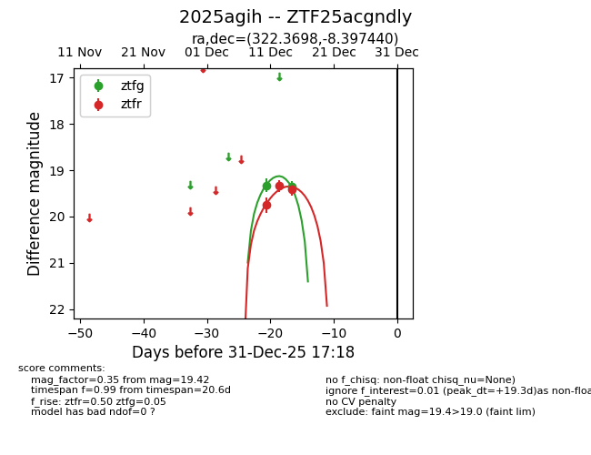
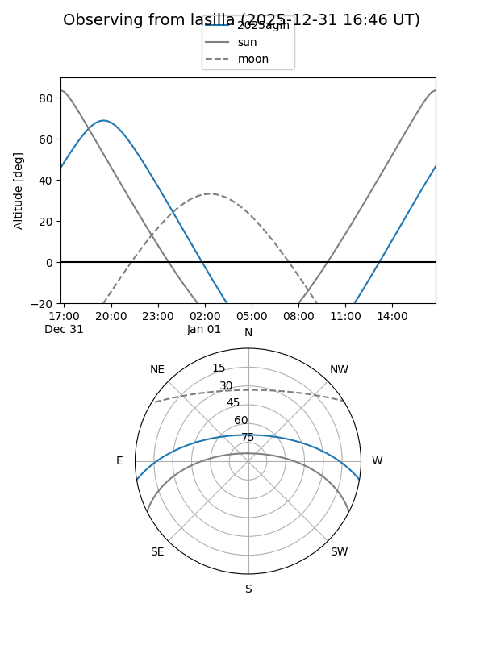
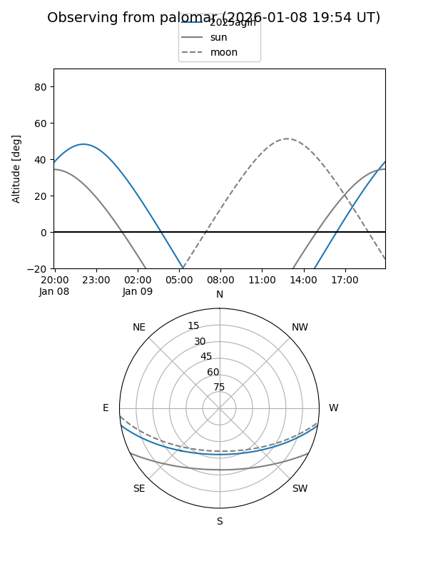
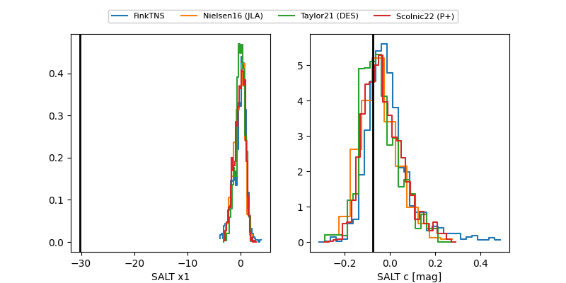

2025agih
Target 2025agih at 2025-12-31 18:00
Aliases and brokers:
FINK: link
Lasair: link
ALeRCE: link
TNS: link
YSE: link
alt names
ZTF25acgndly (ztf,fink_ztf)
2025agih (tns,yse)
Coordinates:
equatorial (ra, dec) = 322.3698,-8.39744
equatorial (HMS+DMS) = 21:29:28.75,-08:23:50.78
galactic (l, b) = (44.5572,-38.81049)
Flags:
Photometry:
last ztfg=19.36, ztfr=19.42
2 ztfg, 3 ztfr detections
Lightcurve

Visibility


Additional plots
